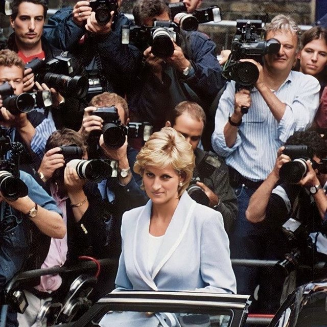

The Eclectic Polymath Podcast · Archive
#048 The People’s Princess: Diana, the Crown, and the Media Machine

About this episode
Princess Diana became one of the most recognizable women in the world, but her story is bigger than the fairytale image. It is about class, monarchy, media obsession, emotional visibility, and what happens when a royal figure becomes more beloved than the institution around her.
This episode traces Diana from her aristocratic upbringing and marriage into the British royal family to the public and private tensions that defined her life: the unstable relationship with Charles, the loneliness inside the palace, her struggles with mental health and eating disorders, and the widening gap between her public image and private reality.
Key points
- Princess Diana became one of the most recognizable women in the world, but her story is bigger than the fairytale image.
- This episode traces Diana from her aristocratic upbringing and marriage into the British royal family to the public and private tensions that defined her life
- the unstable relationship with Charles, the loneliness inside the palace, her struggles with mental health and eating disorders, and the widening gap between her public image and private reality.
- We look at why Diana connected so deeply with people, especially through her humanitarian work around AIDS, landmines, children, and marginalized communities.
- From tabloid frenzy and royal scandal to her death in Paris, global mourning, conspiracy theories, and the lasting impact on William, Harry, and the survival of the Crown, this is a story about how Diana became both a person and a symbol
More like this
 #217 A Different World: The Sitcom That Refused to EndOctober 16, 202651:08
#217 A Different World: The Sitcom That Refused to EndOctober 16, 202651:08 #204 Symbiopsychotaxiplasm: The Film That Watched ItselfOctober 11, 202645:01
#204 Symbiopsychotaxiplasm: The Film That Watched ItselfOctober 11, 202645:01 #180 Hello Kitty: The Strange Power of CutenessSeptember 27, 20261:07:30
#180 Hello Kitty: The Strange Power of CutenessSeptember 27, 20261:07:30 #175 Chris Hansen: When Investigative Journalism Became a SpectacleSeptember 24, 202653:33
#175 Chris Hansen: When Investigative Journalism Became a SpectacleSeptember 24, 202653:33